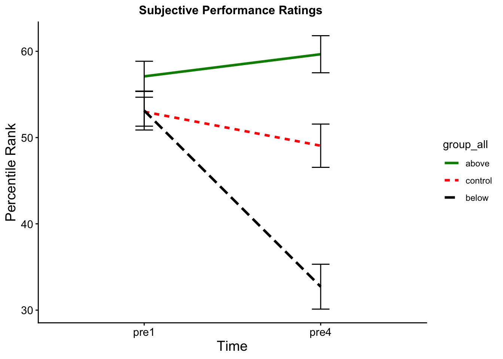

Hands On – Analyze (Einheiten 11 und 12)
Bei Bedarf finden sich hier nochmal die Slides zur EH11:
Und hier die Slides zur EH12:
Lernziele
✅ ggplot2
✅ Korrelationen
✅ Regressionen
✅ t-Tests
Important
Für die heutigen Übungen benötigen wir den Wide Datensatz dat_full sowie den Long Datensatz dat_long
Visualize - Übungen zu ggplot2
📚 R for Data Science - Kapitel 1
📚R for Data Science - Kapitel 11
NoteTabelle mit häufig verwendeten Geoms()
| Geom | Funktion | Einsatzbereich | Bild / Beispiel |
|---|---|---|---|
| geom_point() | Streudiagramm | Zwei numerische Variablen vergleichen (x = Var1, y = Var2) |  |
| geom_jitter() | Jitter-Plot | Punkte leicht versetzen, um Überlappung zu vermeiden (v. a. bei kategorialem x) |  |
| geom_line() | Liniendiagramm | Werteverlauf Über kontinuierliche x-Achse darstellen |  |
| geom_bar() | Balkendiagramm | Häufigkeiten oder Aggregationen für Kategorien (x = Gruppe) |  |
| geom_histogram() | Histogramm | Verteilung einer numerischen Variable (x = Wert) |  |
| geom_boxplot() | Boxplot | Verteilungen über Gruppen vergleichen (x = Gruppe, y = Wert) |  |
NoteCheatsheet ggplot2
Im folgenden wollen wir Figure 4 aus Grinschgl et al. (2021) reproduzieren:
Vorbereitungen:
Um die Mittelwerte plotten zu können, müssen wir die Gruppenmittelwerte und Standardfehler berechnen. Passe dafür den Codeblock an:
Im Hands-on Block 4 haben wir bereits mit dplyr die MMQ-Skalenwerte „mmq_mean“ pro Person berechnet. Nutze nun die dplyr-Funktionen, insbesondere group_by(), um den durchschnittlichen MMQ-Wert pro Gruppe (group_all) sowie den Standardfehler zu berechnen. Die Formel für den Standardfehler lautet: SE = SD / √n und kann z.b so berechnet werden. se_mmq = sd(mmq_mean) / sqrt(n()) . Ergänze den Code unten mit den nötigen Angaben. Lege group_all in deinem summary als Faktor fest mit den Levels in der Reihenfolge: “below”, “control”, “above”.
NoteStandardfehler
Der Standardfehler des Mittelwerts (SEM) beschreibt wie stark der geschätzte Stichprobenmittelwert zufällig vom wahren Populationsmittelwert abweichen kann. Er ist damit ein Mass für die Präzision des Mittelwerts.
dat_full <- dat_full |>
mutate(mmq_mean = rowMeans(select(dat_full, starts_with("question")))
group_summary <- dat_full %>%
group_by(XXXXXXX) %>%
summarize(
group_mean_mmq = mean(XXXXXX),
se_mmq = sd(XXXXXX) / sqrt(n())
)
group_summary$group_all <- factor(group_summary$group_all,
levels = c("XXXXX", "XXXXX", "XXXXX"))1. Erstelle einen leeren Plot und gib deinen Datensatz an
Beginne mit:
ggplot()und deinem Datensatz
2. Definiere die Aesthetic Mappings
Lege fest:
welche Variable auf der x-Achse liegt
welche Variable auf der y-Achse liegt
3. Füge geom_col() dem Plot hinzu
Damit zeichnest du die Balken für die Gruppenmittelwerte.
color =für Konturenfill =für die Füllfarben der Balken
4. Füge Fehlerbalken hinzu
Nutze geom_errorbar() und definiere innerhalb von aes():
ymin = mean - se- Füge die passenden Variablen ein.ymax = mean + se- Füge die passenden Variablen ein.
Passe die Breite der Fehlerbalken mit width = an.
5. Füge Titel und Achsenbeschriftungen hinzu
Nutze dafür labs(). Verändere das theme zu theme_classic()
6. Stelle sicher, dass der vollständige Wertebereich sichtbar ist
- mit
ylim(0, 4)
Nun wollen wir den zweiten Plot aus Grinschgl et al. (2021) reproduzieren.
Ergänze dafür den folgenden Code an den nötigen Stellen mit den passenden Werten und Argumenten.
Lade zuerst den in der letzten Woche gespeicherten Long-Datensatz.
Ersetze anschliessend die Platzhalter “XXXXXX” durch die erforderlichen Werte, um den Plot zu reproduzieren.
Speichere deinen Plot als PNG Datei ab.

descriptives <- dat_long |>
group_by(XXXXXX, XXXXXXX) |>
summarize(N = length(rating),
mean_d = mean(rating),
sd_d = sd(rating),
se_d = sd_d / sqrt(N)
)
descriptives$group_all <- factor(descriptives$group_all, c("above", "control", "below"))
rate_plot <- descriptives |>
ggplot(aes(x = XXXXXX,
y = XXXXXX,
group = XXXX))
rate_plot +
geom_line(aes(color = group_all, linetype = group_all), size = 1.2) +
geom_errorbar(aes(ymin = mean_d - se_d, ymax = mean_d + se_d), width = .1) +
scale_color_manual(values = c("green4", "red", "black")) +
theme_classic() +
labs(title = "XXXXXXX") +
ylab("XXXXXXXX") +
xlab("XXXXXXXXX") +
theme(plot.title = element_text(hjust = 0.5, size = 12, face = "bold"),
axis.text = element_text(size = 11), axis.title = element_text(size = 14))Inferenzstatistik
NoteCheatsheets Statistik
Korrelationen:
- Wähle zwei metrische Variablen aus dem Wide Datensatz aus. Berechne die Korrelation mit
cor.test()für diese beiden Variablen.
cor.test(dat_full$mean_d1_all, dat_full$mean_d_all, method = "spearman")- Finde den Korrelationskoeffizienten r, den p-Wert und die Freiheitsgrade (df). Versuche das Ergebnis zu interpretieren.
- Rufe die Hilfefunktion von
cor.test()auf. Welche Anpassungen kannst du vornehmen, um die Korrelation einseitig (z.B. nur positiver Zusammenhang) und mit der Spearman-Methode zu berechnen?
NoteKorrelationen
Linearer Zusammenhang (Kovarianz) zweier Variablen. Positive Korrelation = hohe Ausprägungen einer Variable hängen mit hohen Ausprägungen einer anderen Variable zusammen. Negative Korrelation = Hohe Ausprägungen einer Variable hängen mit niedrigen Ausprägungen einer anderen Variable zusammen. Korrelationskoeffizient r kann von -1 bis +1 gehen. Der Korrelationstest testet ob r sich signifikant von 0 (kein Zusammenhang unterscheidet). Für Pearson Korrelationen sollte die Normalverteilung der Residuen gegeben sein. Alternative: Spearman Korrelation.
Regressionen
NoteTabelle: Funktionen für Regressionen und verwandte Analysen in R
| Funktion | Beschreibung |
|---|---|
| lm(y ~ x) | Einfache lineare Regression mit einer abhängigen Variablen y und einem Prädiktor x. |
| lm(y ~ x1 + x2) | Multiple Regression mit einer abhängigen Variablen y und zwei Prädiktoren x1 und x2. |
| summary() | Gibt die Ergebnisse der Regressionsanalyse für ein Regressionsmodell aus. |
| confint() | Konfidenzintervalle für die Regressionskoeffizienten. |
| fitted() | Vorhergesagte Werte des Regressionsmodells. |
| resid() | Residuen des Regressionsmodells. |
| predict() | Vorhergesagte Werte für bestimmte Werte der Prädiktorvariablen. |
| anova() | Vergleicht die Determinationskoeffizienten zweier Regressionsmodelle mit einem F-Test. |
| vif() * | Variance Inflation Factors (VIF) für jeden Prädiktor; aus dem car-Paket. |
* aus zusätzlichen Paketen
Paket
„car“installieren und laden.Mach aus deiner davor berechneten Korrelation nun ein Regressionsmodel mit der Funktion
model <- lm(outcome ~ predictor, data). Schau dir den Output mitsummary(model)an und versuche ihn zu interpretieren.
model_1 <- lm(mean_d1_all ~ mean_d_all, data = dat_full)
summary(model_1)- Ergänze das Modell nun um eine weitere Prädiktorvariable (mit + Variable), sodass du eine multiple Regression berechnest. Hier müssen wir auf Multikollinearität testen – mit
vif(model)aus dem „car“ Paket (die Werte sollten größer als 0.10 sein, sodass keine Multikollinearität vorliegt). Berechne auch die Konfidenzintervalle der Beta-Koeffizienten mitconfint(model).
model_2 <- lm(mean_d1_all ~ mean_d_all + mean_rl_all, data = dat_full)
summary(model_2)
confint(model_2)
NoteFortgeschritten / Freiwillig
Berechne eine einfache logistische Regression zwischen Strategien (ohne strategies == 3) und Offloading (mean_rl_all) mit dem Wide Datensatz. Nimm das Statistik III Cheatsheet von Dr. Boris Mayer zur Hand. Tipp: Du musst die Strategien in 0 und 1 umkodieren.
t-Tests für abhängige Stichproben
NoteTabelle: Funktionen für t-Tests und verwandte Analysen in R
| Funktion | Beschreibung |
|---|---|
| t.test | Allgemeine Funktion für verschiedene t-Tests: Ein-Stichproben-t-Test, t-Test für unabhängige Stichproben und t-Test für abhängige Stichproben. |
| t.test(av, mu = x) | Ein-Stichproben-t-Test. av = abhängige Variable. x = Vergleichswert der Population. |
| t.test(av ~ uv) | Welch-t-Test für unabhängige Stichproben. av = abhängige Variable, uv = Gruppenvariable. |
| t.test(av ~ uv, var.equal = TRUE) | Klassischer t-Test für unabhängige Stichproben (Varianzen vorausgesetzt gleich). |
| t.test(av1, av2, paired = TRUE) | t-Test für abhängige Stichproben (z. B. Prä–Post). av1 und av2 = gemessene Variablen. |
| leveneTest(av, uv) * | Levene-Test auf Varianzhomogenität für unabhängige Gruppen. Aus dem car-Paket. |
| effsize::cohen.d() * | Berechnet die standardisierte Effektgröße Cohen’s d + Konfidenzintervall. Aus dem effsize-Paket. |
* Funktionen aus zusätzlichen Paketen.
Paket
„effsize“installieren und laden.Wir wollen einen t-Test für unabhängige Stichproben durchführen, um das Pre 4 Rating der
„above“und„below“Gruppen zu vergleichen. Starte mit einemleveneTest()aus dem„car“Paket um die Varianzhomogenität zu prüfen. Tipp: Filtere die Daten, sodass nur die beiden Gruppen„above“und„below“beinhaltet sind (d.h. ohne die Gruppe„control“).
- Berechne nun den entsprechenden t-Test mit
t.test(). Du kannst auch die Hilfefunktion zu Rate ziehen. Versuche dann den Output zu verstehen bzw. das Ergebnis zu interpretieren. Tipp: Wenn die Varianzhomogenität gegeben ist (d.h. der Levene Test nicht signifikant ist), muss manvar.equal = TRUEangeben, ansonsten wird einWelch t-Testberechnet.
t.test(pre4 ~ group_all, data = dat_full_below_above, var.equal = TRUE)- Nun berechnen wir noch
Cohen‘s dals Effektstärken-Maß für den Mittelwertsunterschied. Verwende dafüreffsize::cohen.d(). Da es„cohen.D“auch im Paket„psych“gibt, ist es wichtig hier„effsize::“voranzusetzen.
👉 Und schon haben wir einen der Post-Hoc t-Tests für die 2x3 ANOVA aus Grinschgl et al. (2020) berechnet (notwendig für die Abschlussarbeit)
t-Tests für abhängige Stichproben
- Berechne einen t-Test für abhängige Stichproben um in der
„control“GruppePre 1undPre 4zu vergleichen. (D.h. filtere zunächst den Datensatz, sodass nur mehr die„control“Gruppe
t.test(datensatz$Variable1, datensatz$Variable2, paired = TRUE) - Wandle den t-Test nun in einen einseitigen Test mit alternative = „greater“ oder alternative = „less“ um und berechne Cohen‘s d als Effektstärkenmaß (Achtung: paired = True setzen).
Am Ende deiner Übungen - vergiss nicht dein Skript abzuspeichern! 😉
Grinschgl, Sandra, Hauke S. Meyerhoff, Stephan Schwan, and Frank Papenmeier. 2021. “From Metacognitive Beliefs to Strategy Selection: Does Fake Performance Feedback Influence Cognitive Offloading?” Psychological Research 85 (7): 2654–66. https://doi.org/10.1007/s00426-020-01435-9.